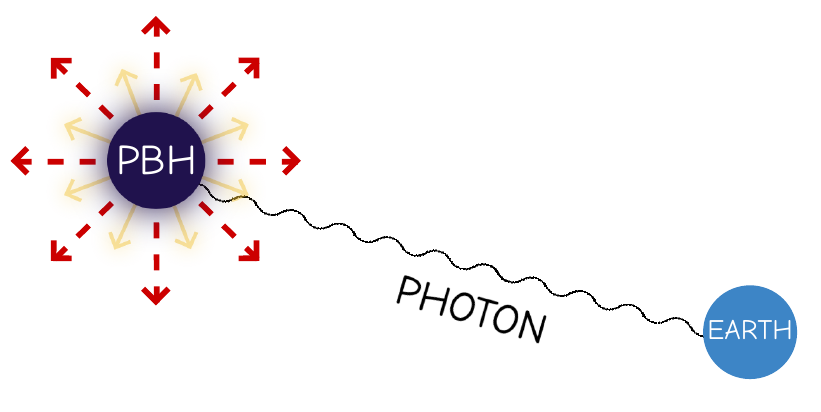
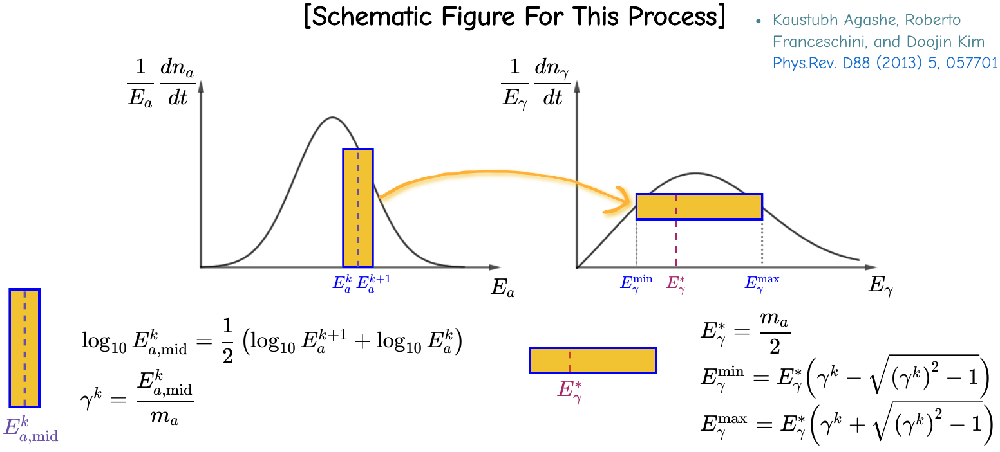
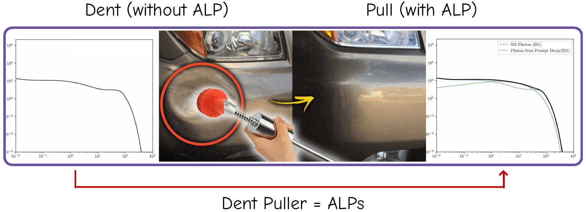
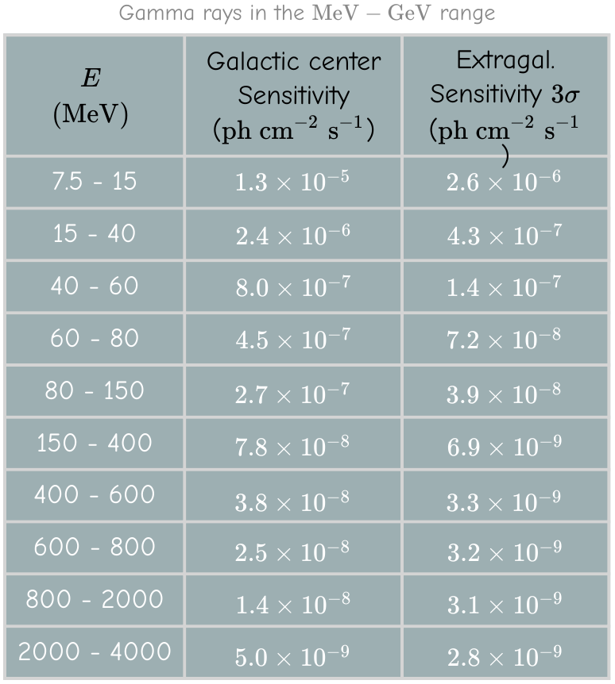
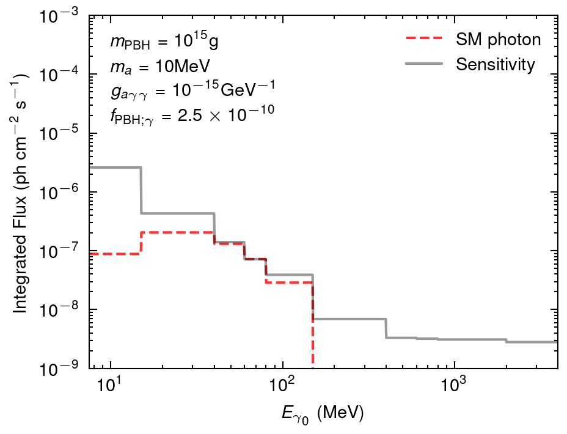

layout: true <div class="my-header"> <p class="align_left"><img src="images/yonsei_logo.png" style="height: 30px;"/></p> <p class="align_right"><b>Exploration of PBHs and ALPs through a novel decay model on cosmological scale</b></p> </div> <div class="my-footer"> <p class="align_right"><b>2023.06.12 PPC2023</b></p> <p class="align_left"><b>Tae-Geun Kim</b></p> </div> --- class: center, middle <h2 style="color:black">Exploration of PBHs and ALPs through a novel decay model on cosmological scale</h2> <br/> <h3 style="color: black">Tae-Geun Kim</h3> <h4 style="color: darkblue">Yonsei University</h4> <br/> <h4 style="color: black">with Yongsoo Jho, Jongchul Park, Seongchan Park, Yeji Park</h4> <h4 style="color:darkblue">arXiv: 2212.11977</h4> --- ### Primordial Black Hole * Cosmologically produced (e.g., during the inflationary epoch) * Considered as one of the viable candidates for dark matter * Possess the ability to evaporate through a process known as _Hawking radiation_ * **Hawking temperature of PBH** $$\small k\_BT\_{\text{PBH}} = \dfrac{\hbar c^3}{8\pi G M\_{\text{PBH}}} \sim 10.6 \left(\dfrac{10^{15} \mathrm{g}}{M\_\text{PBH}}\right) \mathrm{MeV} \sim 10^{11}\;\mathrm{K}$$ * **The lifetime of PBH** <span style="font-size:0.7em;color:rgb(70,69,69)">[Don N. Page, Phys. Rev. D 13, 198 (1976)]</span> $$\small \tau\_{\text{PBH}} \sim 13.8 \times 10^9 \mathrm{yr} \left( \dfrac{M\_\text{PBH}}{5\times 10^{14} \mathrm{g}} \right)^3$$ * **Emission rates of particle $i$** - This can be computed by `BlackHawk` <span style="font-size:0.7em;color:rgb(70,69,69);float:right">[Alexandre Arbey, J√©r√©my Auffinger, Eur. Phys. J. C 81 10, 910 (2010)]</span> $$\small \dfrac{d^2 N\_{i}}{dEdt} = \dfrac{g\_i}{2\pi} \dfrac{\Gamma(E, M\_{\text{PBH}})}{e^{E/k\_BT\_{\text{PBH}}} - (-1)^{2s_i}}$$ --- ### PBH as a Particle Factory .center[ ] --- class: split-50 ### Photons from PBH .left-column[ .center[  <figcaption style="text-align:center";><b>Fig.1</b> Photon from PBH</figcaption> ] ] .right-column[ .center[ **Our assumptions on PBH** ] * Monochromatic mass distribution * Schwarzschild PBH * Isotropically distributed ] <hr style="height:0.2em; visibility:hidden;" /> .center[ **Differential photon flux** from Extragalaxy <span style="font-size:0.7em;color:rgb(70,69,69)">[B. J. Carr, K. Kohri, Y. Sendouda, and J. Yokoyama, Phys. Rev. D 81, 104019 (2010)]</span> ] $$ \frac{\text{d}F\_{\gamma\_0}}{\text{d}E\_{\gamma\_0}} = n\_{\text{PBH}}(t\_0) \int\_{t\_{\text{CMB}}}^{\text{min}(\tau\_{\text{PBH}}, t\_0)} \text{d}t \; (1+z(t))\; \frac{\text{d}^2N\_\gamma}{\text{d}E\text{d}t}\bigg|\_{E = (1+z(t))E\_{\gamma\_0}} $$ $$ \small n\_\text{PBH}(t\_0) = \frac{f\_{\text{PBH}} \rho\_\text{DM}}{M\_\text{PBH}},\, \rho\_{\text{DM}} = 2.35 \times 10^{-30} \mathrm{g} \; \mathrm{cm}^{-3},\, f\_{\text{PBH}} = \Omega\_{\text{PBH}}/ \Omega\_{\text{DM}} $$ --- ### Flux of photons from PBH .center[ <figcaption style="text-align:center";><b>Fig.2</b> Redshifted differential flux of (primary + secondary) photon</figcaption> ] --- class: split-50 ### Axion-Like Particles (ALPs) * ALPs : Pseudo NG bosons of the spontaneously broken global $\small U(1)$ symmetry * ALPs studies in cosmology : inflation, dark matter, relaxion and etc. <span style="font-size:0.7em; color:rgb(70,69,69)">üîπ [Katherine Freese, Joshua A. Frieman, and Angela V. Olinto-Phys. Rev. Lett. 65, 3233 (1990)]</span> <span style="font-size:0.7em; color:rgb(70,69,69)">üîπ [P. Arias, D. Cadamuro, M. Goodsell, J. Jaeckel, J. Redondo, and A. Ringwald-JCAP06013 (2012)]</span> <span style="font-size:0.7em; color:rgb(70,69,69)">üîπ [P. W. Graham, D. E. Kaplan, and S. Rajendran-Phys. Rev. Lett. 115 no. 22, 221801 (2015)]</span> * Astrophysical sources of ALPs : SN, Sun, NS, **PBH**, and etc. .left-column[ .center[ <img src="images/alps.png" alt="alps" style="width:95%"> <figcaption style="text-align:center";><b>Fig.</b> </figcaption> ] ] .right-column[ .center[ **Properties** ] * Decays to 2 photons * Its mass and the coupling to photons are *independent* in general ] --- class: split-50 ### Motivation for time-varying decay .middle-column[ $$ \small \text{ALP's mean lifetime : } \gamma\tau\_a = \frac{64\pi E\_a}{g\_a^2 m\_a^4} \equiv \frac{\gamma}{\Gamma_a} $$ ] .left-column[ .center[ <figcaption style="text-align: center;font-size:0.7em;"><b>Fig.3</b> Mean lifetime of ALPs in the rest frame</figcaption> ] ] .right-column[ .center[ <img src="images/01_tau_cmb.png" alt="01_tau_cmb" style="width:90%"> <figcaption style="text-align: center;font-size:0.7em;"><b>Fig.4</b> Mean lifetime of ALPs from CMB (Boosted + Redshifted)</figcaption> ] ] .middle-column[ $$ \small \therefore\,\text{ALP's mean lifetime : } \tau\_a^t \equiv \gamma(t) \tau\_a = \frac{64\pi E\_a(t)}{g\_a^2 m\_a^4} \equiv \frac{1}{\Gamma_a^t} $$ ] --- ### Decay equation * **Time-varying decay equation** $$ \small \frac{\text{d}N\_a}{dt} = -\Gamma\_a^t N\_a ~\Rightarrow~N\_a(t) = N\_a(t\_e)\exp\left(-\int\_{t\_e}^t \Gamma\_a^{t';t\_e} \,\text{d}t'\right) $$ <br/> * **Time-varying decay in terms of Survival analysis** <span style="font-size:0.5em; color: rgb(78, 77, 77);float:right">[D. G. Kleinbaum (1996) Survival analysis: A self learning text. New York: Springer]</span> Survival analysis | Expression | Time-varying decay | Notation :---------------: | :--------: | :----------------: | :--------: Survival function | $S(t) = \mathbb{P}[X > t]$ | Survival probability | $P_\text{surv}$ Hazard function | $\displaystyle h(t) = -\frac{\text{d}}{\text{d}t}[\log S(t)]$ | Decay rate | $\Gamma_a^t$ Failure density function | $\displaystyle \int\_0^t f(u)du = 1-S(t)$ | Decay density function | $\mathcal{P}_\text{decay}$ --- class: split-50 ### Decay number density * **Survival probability & Decay density function** $$ \begin{aligned} \small P\_\text{surv} (t;t\_e,E\_a) &= \small \exp \left(-\int\_{t\_e}^t \Gamma\_a^{t';t\_e}\,\text{d}t'\right)\\\\ \small \mathcal{P}\_\text{decay}(t;t\_e,E\_a) &= \small P\_\text{surv}(t;t\_e,E\_a) \times \Gamma\_a^{t;t\_e} \end{aligned} $$ * **Differential number density for decaying ALPs** .left-column[ <div id="boxshadow" style="width:90%;margin:0 auto;font-size:0.9em;"> <b>From $\small (t_e, E_a)$ to $\small t$ :</b> $$ \small \phi_a(t;t_e,E_a) \,=\, \frac{\text{d}n_a}{\text{d}t_e}\times \mathcal{P}_\text{decay}(t;t_e,E_a) $$ </div> ] .right-column[ <div id="boxshadow" style="width:90%;margin:0 auto;font-size:0.9em;"> <b>From $\small t\_e$ to $\small (t,\widetilde{E}\_a)$ :</b> $$ \small \phi\_a(t,\widetilde{E}\_a;t\_e) = \phi(t;t\_e,E\_a) \Big{|}\_{E\_a = \mathcal{R}^{-1}\_{t\to t\_e}(\widetilde{E}\_a)} $$ </div> ] $$ \small \therefore\,\text{At $(t, E\_a)$ :}\quad \frac{\text{d}n\_a^{\text{dec}}}{\text{d}t} = \int\_{t\_e^\text{min}}^t \left(\frac{1+z(t)}{1+z(t\_e)}\right)^3 \phi\_a (t,E\_a;t\_e)\text{d}t\_e $$ --- class: split-50 ### Boosted ALP decay to photons * Using *Two body decay kinematics* to describe the decay of ALP to photon: $\small a \rightarrow \gamma\gamma$ * Lorentz boost : `\(\small E_{\gamma} = E^*_{\gamma} (\gamma \pm \sqrt{\gamma^2 -1}) \)` where `\(\small E_\gamma^* = m_a / 2\)` .center[  ] --- class: split-50 ### Boosted & Redshifted photon flux .left-column[ .center[ <figcaption style="text-align:center;font-size:0.8em;"><b>Fig.5 Boosted photon spectrum</b> </figcaption> ] ] .right-column[ * **Boosted photon flux** <span style="font-size:0.5em; color: rgb(78, 77, 77);float:right">[K. Agashe, R. Franceschini, and D. Kim, Phys. Rev. D 88, 057701 (2013)]</span> $$ \small \left\\{\left(E\_a,\frac{1}{E\_a}\frac{\text{d}n\_a^\text{dec}}{\text{d}t}\right)\right\\}\overset{\text{Boost}}{\longrightarrow} \left\\{\left(E\_\gamma,\frac{1}{E\_\gamma}\frac{\text{d}n\_\gamma}{\text{d}t}\right)\right\\} $$ * **Integration of redshifted photon flux** <span style="font-size:0.5em; color: rgb(78, 77, 77);float:right">[B. J. Carr, K. Kohri, Y. Sendouda, and J. Yokoyama, Phys. Rev. D 81, 104019 (2010)]</span> $$ \small \frac{\text{d}F\_{\gamma\_0}}{\text{d}E\_{\gamma\_0}} = \int\_{t\_\text{CMB}}^{t\_0} \frac{\text{d}t}{(1+z(t))^3 E\_{\gamma\_0}} \frac{\text{d}n\_\gamma}{\text{d}t}\Big{|}\_{E\_\gamma=(1+z(t))E\_{\gamma\_0}} $$ ] --- ### Summary of time-varying decay .center[ ] --- class: split-50 ### Differential flux of photons .left-column[ .center[ <figcaption style="text-align:center;font-size:0.8em;";><b>Fig.6 Differential flux for $g\_a=10^{-16}\text{GeV}^{-1}$</b> </figcaption> ] ] .right-column[ .center[ <figcaption style="text-align:center;font-size:0.8em;";><b>Fig.7 Differential flux for $g\_a=10^{-14}\text{GeV}^{-1}$</b> </figcaption> ] ] --- ### ALPs : "The dent puller" <br/> .center[  ] --- class: split-50 ### e-ASTROGAM <span style="font-size:0.5em;color:rgb(70,69,69);float:right">[Experimental Astronomy 44 (2017) 25-82]</span> * **A gamma-ray mission** and the planned launch date is 2029 by ESA .left-column[ * Sensitive in **1 ~ 1000 MeV** range * 1-2 orders of magnitude improvement in sensitivity comparing to COMPTEL experiment .center[ <img src="images/e-astrogam_left.png" alt="" style="width:100%"> ] ] .right-column[ .center[  ] ] --- class: split-50 ### e-ASTROGAM for PBH .left-column[ .center[  <figcaption style="text-align:center;font-size:0.8em;";><b>Fig.8 $f\_\text{PBH}$ for SM photon only</b> </figcaption> ] ] .right-column[ .center[ <figcaption style="text-align:center;font-size:0.8em;";><b>Fig.9 $f\_\text{PBH}$ for total photon</b> </figcaption> ] ] --- class: split-50 .left-column[ ### e-ASTROGAM for PBH .center[ <figcaption style="text-align:center;font-size:0.8em;";><b>Fig.10</b> $\small \Delta f\_\text{PBH} / f\_{\text{PBH};\gamma}$ ($\small m\_\text{PBH} = 10^{15}\text{g}$)</figcaption> ] ] .right-column[ <hr style="height:0.5em; visibility:hidden;" /> <span style="font-size:0.6em; color: rgb(78, 77, 77); float:right"><b>GC</b>: M. J. Dolan, F. J. Hiskens, and R. R. Volkas, [arXiv:2207.03102] (2022)</span> <span style="font-size:0.6em; color: rgb(78, 77, 77); float:right"><b>SN1987A</b>: J. Jaeckel, P. C. Malta, and J. Redondo, Phys. Rev. D 98, 055032 (2018)</span> <hr style="height:2.5em; visibility:hidden;" /> .center[ <figcaption style="text-align:center;font-size:0.8em;";><b>Fig.11</b> $\small \Delta f\_\text{PBH} / f\_{\text{PBH};\gamma}$ ($\small m\_\text{PBH} = 10^{16}\text{g}$)</figcaption> ] ] $$ \small \Delta f\_\text{PBH} \equiv |f\_\text{PBH;tot} - f\_{\text{PBH};\gamma}| $$ --- class: split-50 ### Results & Summary .left-column[ .center[ <img src="images/03_FIG_10-1_1_w_bound.png" alt="1.00e+15" style="width:95%"> <figcaption style="text-align:center;font-size:0.8em;";><b>Fig.12 New constraint for PBHs ($m_a = 1 \text{MeV}$)</b> </figcaption> ] ] .right-column[ <!--2.5em for view --> <!--1em for print --> .center[ <figcaption style="text-align:center;font-size:0.8em;"><b>Fig.13 New constraint for PBHs ($m_a = 1 \text{MeV}$) (extend)</b></figcaption> ] ] <hr style="height:0.2em; visibility:hidden;" /> <hr/> 1Ô∏è‚É£ For particles with a very long lifetime, time-varying decay must be considered. 2Ô∏è‚É£ When examining ALPs decay, the boost effect on photons should be taken into account. ‚òëÔ∏è By using PBHs as a source of ALPs, we can establish new constraints on PBHs.